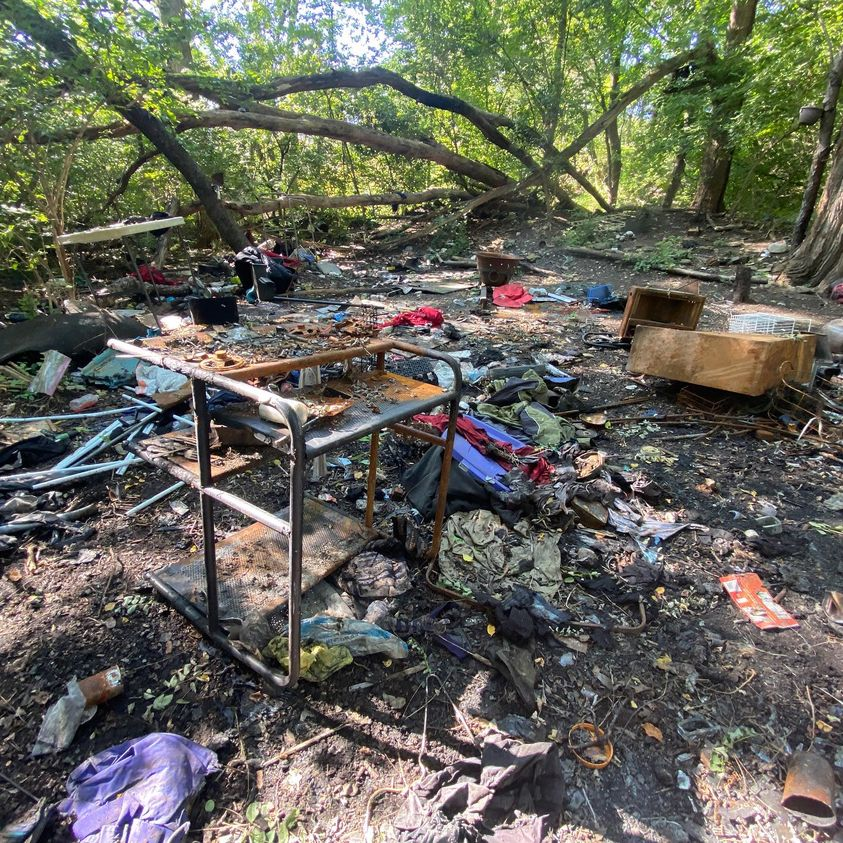

Timeline photos
Here are the remains of a homeless camp that the city of Akron cleared. I took this just a few days ago.
Akron is littered with these dead camps that are abandoned and never cleaned up. Like NEVER cleaned up. For decades.
I could probably do an entire book on these dead camps.
We need designated camps that are monitored, have rules, are regularly cleaned and are away from traditional house neighborhoods. What we are currently doing is so much worse for homeless people, other Akron residents and businesses. This is a complete systemic failure of city governments.